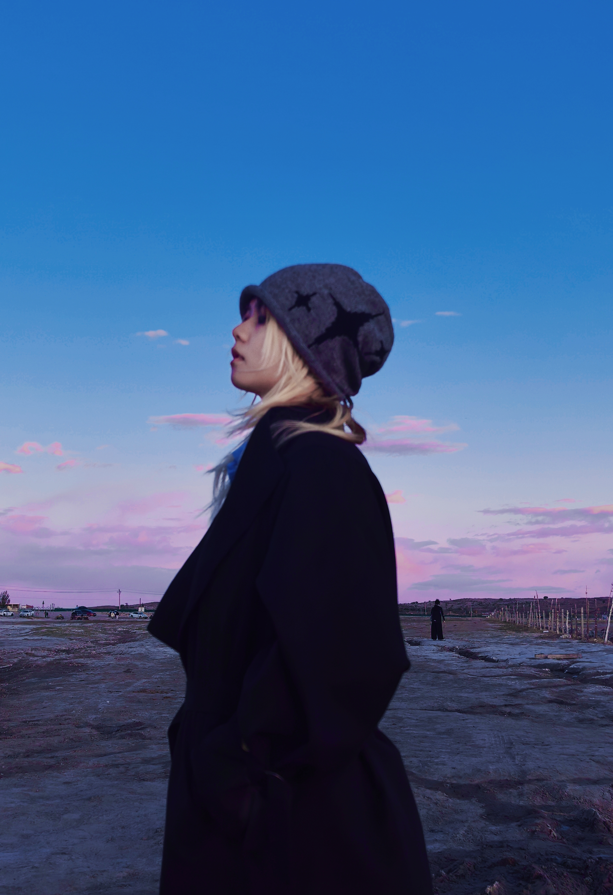

WENG BIYUBASED IN BEIJING · 2026
01 / ABOUT
Creative practice专业与兴趣
Education
EDU 01
北京师范大学
2024.09-2027.06，戏剧与影视（全日制研究生），关注传播学理论、影视史论、剧本创作、电影节运营与视听节目策划。
EDU 02
汕头大学
2019.09-2023.06，广播电视学（全日制本科），主修媒体技术、网络视觉设计、摄影基础、信息图表设计与专题片制作。
Professional Skills
SKILL 01AI & 美学 & 工作流
- 视频生成模型评测、测试集设计与 Prompt 优化
- 运用 Vibe Coding 搭建工具与创作工作流
- 独立完成 AIGC 影片从创意到成片的制作
SKILL 02视频创制
- 完成选题策划、分镜脚本与现场拍摄
- 负责剪辑、包装及封面制作
- 有系列短视频与品牌内容制作经验
SKILL 03剧作 & 类型
- 擅长类型故事构思与剧本创作
- 注重人物关系、戏剧冲突和结构推进
- 能将文字剧本转化为可视化场景
SKILL 04内容 & 视觉
- 策划适配不同平台与受众的图文、短视频内容
- 运用构图、光线与节奏组织视觉表达
- 有新媒体内容制作与账号孵化经验
02 / SELECTED WORK
Selected work作品选集
A collection of visual research,
moving images and words.
03 / EXPERIENCE
Experience实习经历
2026.04 - 至今
快手科技｜可灵 AI 事业部-评测中心
视频生成基模评测实习生【艺术方向】
- 全链路评测业务参与 Kling v4 视频生成基模评测，覆盖测试集构造、评测执行、标注审核与报告产出；构造 Prompt 300+，参与报告 20+。
- 专项测试集建设搭建通用测试集、35 种风格专项、7 大应用场景、社媒爆款案例仿写、高表现力运镜与长时长评测集。
- 标准与概念知识库建设构建视听语言美学知识库，覆盖摄影属性、镜头调度、构图组织、场景调度、色彩与光影等 9 个子库。
- 评测提效工具支持围绕 caption、编导分镜、Prompt 泛化、表演提升与常识辨别等环节搭建 agent / skill / 工作流。
- 行业调研与数据分析参与 Higgsfield 开源电影项目与 Arena bad case 分析，沉淀提示词写法规律和模型能力差异判断。
2025.12 - 2026.04
杭州寻酷科技有限公司（SeeKoo）｜产品部
海外产品运营实习生
- 海外社媒宣传物料制作调研竞品社媒风格，完成 Dzine AI 新功能、模型上新宣传片与宣传物料制作。
- 产品功能测试支持参与 Ani Studio 功能内测，支持 PE 能力、视觉生成模型与 t2va / i2va 工作流效果评测。
- 内容模板创作和优化作为小组负责人，搭建并优化产品内 Prompt 文字模板与 AI 动画样片生产流程。
2025.09 - 2025.12
美团｜SaaS 餐饮事业部｜品牌和营销组
视频实习生
- 分镜脚本搭建根据项目文案和客户需求，将营销信息转化为可拍摄镜头脚本。
- 拍摄与视频制作参与潍坊、武汉、长沙、天津四地拍摄，独立完成视频包装剪辑。
- 封图制作依据视频主题与调性制作封面图，提升内容识别度。
2025.06 - 2025.07
戏剧综艺《江南·十二场欢聚》
短视频导演
- 选题策划与编导结合吴江文化与剧综内容，每日独立策划短视频选题。
- 短视频素材拍摄与当日产出完成现场素材拍摄，并在当天输出 4 条视频。
2024.05 - 2024.07
博源文化传播有限公司
视频编导
- 策划与制作挖掘肇庆周边三农题材，负责从策划到视频制作的完整链路。
- 农业 IP 孵化打造“亲切和蔼的新农人朋友”形象，50 天抖音粉丝增长至 3000+。
2023.03 - 2023.06
丁香医生｜大众医学部｜新媒体中心
新媒体实习生
- 视频策划与制作参与开拓“丁香同事日常”系列，制作 50+ 条视频，产出抖音千赞视频 40+、小红书千赞视频 20+。
- 图文创作将视频选题转化为图文内容，优化排版与信息表达。
- 数据统计与分析复盘视频选题节奏与风格，辅助提升内容触达效率。
04 / PROJECTS & WRITING
Projects项目经历
2025.02 - 2025.05
第 32 届北京大学生电影节
原创部成员。负责高校与展映分会场开拓、原创影片单元投稿评审、展映物料设计与“光影触及的地方”活动回顾推文撰写。
2025.10.31 - 2025.11.02
粤港澳大湾区电影周青年创作训练营
参与 4 天创作训练课程，与导演、编剧及电影行业从业者进行创作交流。
2021.09 - 2022.06
汕头草根播报
策划与拍摄微电影《绩点为王》，独立策划访谈节目《从前慢》。